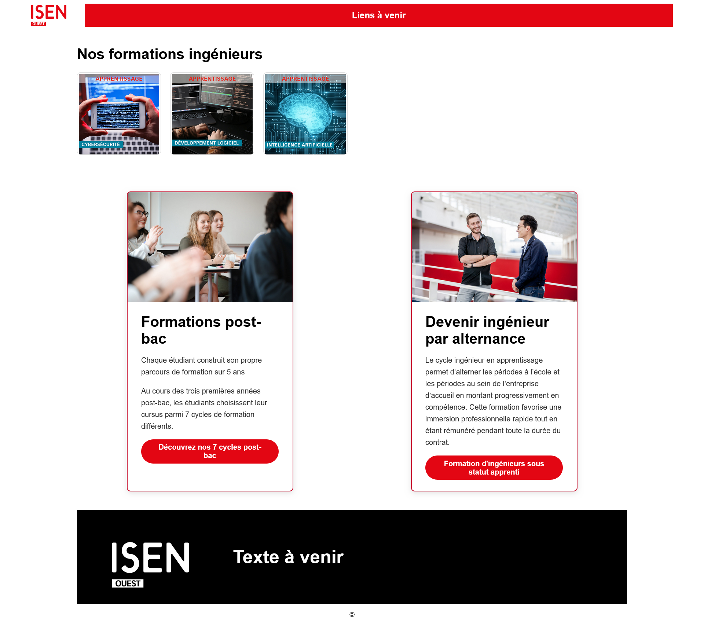

Post-bac https://isen-ouest.fr/wp-content/uploads/2024/10/18/formation-initiale-scaled.jpg Formations post-bac Chaque étudiant construit son propre parcours de formation sur 5 ans. Au cours des trois premières années post-bac, les étudiants choisissent leur cursus parmi 7 cycles de formation différents. Lien : Cycles post-bac FISA https://isen-ouest.fr/wp-content/uploads/2024/10/18/formation-apprentissage-scaled.jpg Devenir ingénieur par alternance Le cycle ingénieur en apprentissage permet d’alterner les périodes à l’école et les périodes au sein de l’entreprise d’accueil en montant progressivement en compétence. Cette formation favorise une immersion professionnelle rapide tout en étant rémunéré pendant toute la durée du contrat. Lien : Formation d'ingénieurs sous statut apprenti